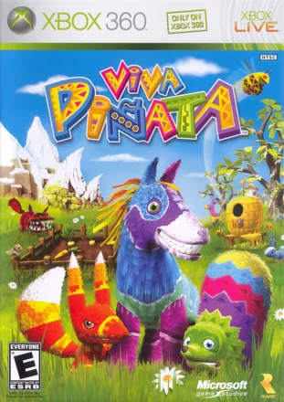
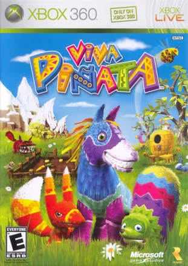

Iconic is the newest venture backed AAA games studio in London. Our founding team is a mix of AAA games experience and AI expertise with founders who have worked on games like GTA, Star Wars, Just Cause, Sleeping Dogs and many more and developed cutting edge AI tech at DeepMind, Meta AI Research and more. We aim to be at the forefront of AI empowered games, bringing experiences to players that weren't previously possible and enabling a small team to deliver bigger, better games.
Who we are
John Lusty
Founder and CEO
John made his first game on a Commodore PET at the age of five and never stopped. He has worked in game development and publishing, including at Ninja Theory and Square Enix.
He also founded the London Office for Oculus/Meta and has led engineering, product and design at multiple companies including building autonomous vehicles at FiveAI.
Favourite Games
Total War: Warhammer, Baldurs Gate, Skyrim, Civilization, The Long Dark
Gameogaphy
Junaid Hussain
Founder and President
After investing in over a dozen gaming and technology companies, Junaid jumped to the other side of the table to start Iconic after seeing a generational opportunity to play games at the office all day...
Favourite Games
Just Cause 3, Sleeping Dogs, Life is Strange
Piotr Trochim
Founder and VP Applied AI
Piotr has worked in both AAA games and deep tech AI; he led AI and animation for The Witcher II at CD Projekt Red and worked on reinforcement learning at DeepMind and Meta AI research. At Iconic he heads applied AI, finding practical ways to use AI to make developers lives better and deliver new experiences to our players.
Favourite Games
Starcraft II, Battlefield 2142, Dark Souls II, Blasphemous
Gameogaphy
Kieran Donaldson
Founder and VP Engineering
Kieran has worked in the games industry for more than 20 years. He spent 7 of those years working on generative animation at NaturalMotion where he worked on the Star Wars: The Force Unleashed games with LucasArts. More recently he has founded two games and VR companies.
Favourite Games
Command and Conquer, Left 4 Dead, Skyrim, World of Tanks
Gameogaphy
Andy Earle
Engineer
Andy is a Senior Software Engineer with over 20 years professional experience in the games industry. He’s released dozens of games, working on everything from UI to AI to networking for pretty much every console and platform going.
Favourite Games
Populous II, Zelda: Ocarina of Time, The Secret of Monkey Island, Rainbow Islands, World of Warcraft
Gameogaphy
 

Alba Navarro Rosales
Founding Engineer
Alba graduated from the University of Cambridge last year with a double first in Computer Science and Management. She worked on Returnal for PC during her internship, and then went on to implement her own real-time ocean rendering engine as her dissertation project, receiving a Highly commended Dissertation Prize for it.
Favourite Games
Journey, The Last of Us
Gameogaphy
Mikel Bober-Irizar
Founding Engineer
Mikel became the world’s youngest Kaggle Grandmaster at 17, then ranked the #1 data scientist in the UK. He graduated from the University of Cambridge last year after four years of Computer Science where he achieved a starred first in his BA and a distinction in his MEng.
Favourite Games
Life is Strange, Hades, Nier: Automata, Dishonored
Borja Gonzalez Leon
Founding Research Scientist
Borja recently completed his PhD in ML at Imperial College London with a focus on embodied AI agents. Alongside his doctoral pursuits, he led research at leading AI labs, including Sony AI and Meta, with his impactful work spanning across diverse domains such as gaming, autonomous driving, advertising, and satellite imagery.
Borja was included in the 35 under 35 List of Future Leaders by Santander–CIDOB in 2021 for his contributions in the field of AI.
Favourite Games
Mount & Blade II, The Witcher III, Total War: Warhammer, Skyrim

Phil Rogers
Chief Strategic Officer
Embracer Group
Phil has over 20 years’ experience in the games industry working across start-ups to multinational organisations. He became CEO of Eidos in 2008 and was CEO across Square Enix’s western business from 2009 to 2022. He is currently the Chief Strategy Officer for the Embracer Group as well as CEO for their 12th operating group including Crystal Dynamics.
Prof. Andrew Blake
Professor of Machine Intelligence
University of Cambridge
Professor Andrew Blake was formerly Research Director at The Alan Turing Institute and Laboratory Director of Microsoft Research.
He was an academic for 18 years, latterly on the faculty at University of Oxford, where he was a pioneer in the development of the theory and algorithms that can make it possible for computers to behave as seeing machines...
Michael Edelstein
Former President
NBCUniversal
Michael built NBC Universal International Studios from inception into a global content powerhouse.
He was one of the two original Executive Producers of the world-wide phenomenon that is Desperate Housewives and he launched the multi-billion-dollar CSI Franchise for CBS Entertainment.
Chris Heatherly
EVP
The Walt Disney Company
Chris is a veteran executive in the games industry and has been an innovator and leader at the intersection of entertainment and technology for over 20 yrs. He has run the Games businesses of both Disney and NBCUniversal as general manager and is an experienced brand builder having helped build franchises such as Pixar, Marvel, Star Wars, and Jurassic World into global, multi-billion dollar businesses. He is also an advisor and consultant to startups as well as large media & brand companies, based in Los Angeles.